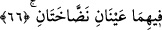
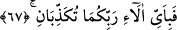
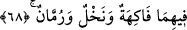

koymak” demektir. Bunlar olmadığından namaz sahih olmaz.
66. İkisinde de durmadan fışkıran iki kaynak vardır.
Kamus’ta belirtildiği gibi, kaynağından şiddetle fışkıran su; yâni orada kesilmeksizin
suyu fışkırtan iki fiskiye vardır. Bu mânâ daha önce ifâde edildiği gibi önceki iki
cennetin sonrakilerden üstün olduğunu gösterir. Çünkü, Allah önceki iki cennet için
“akıp giden iki kaynak”, diğer iki cennet için “durmadan fışkıran iki kaynak” ifâdesini
kullanmıştır. Akmak, fışkırmaktan üstündür. Zira fışkırma, alınan suyun yerine o miktar
başka suyun gelmesiyle gerçekleşir. Bu ise suyun akmasına yetmez. Akma olayında su
daha gürdür.
İbn Abbâs (r.a.), iki cennette misk ve anberden iki kaynak vardır, demiştir. Kelbî de,
bereket kaynağı vardır, demiştir.
67. Öyleyken Rabbinizin hangi nimetlerini yalanlayabilirsiniz?
“Öyleyken” bu iki kaynaktan içerek kanmanıza rağmen “Rabbinizin hangi
nimetlerini yalanlayabilirsiniz?”
68. İkisinde de her türlü meyveler, hurma ve nar vardır.
Son iki kelime hurma ve narın meyve anlamındaki “fâkihe” kelimesi üzerine atfı,
fazîletlerini belirtmek için Cibrîl’in ve Mikâîl’in melâike üzerine atfı kabilindendir.
Hurma ürünü meyve ve gıdadır, nar da meyve ve ilaçtır. Bu dünya hâline göre meyve
değildir. Yoksa cennette hepsi meyve olarak faydalanılacak nimetlerdir. Bu sebeple
İmâm Azam Ebû Hanîfe demiştir ki; meyve yememek üzere yemin eden kimse, nar
veya olgunlaşmamış hurma yemesi hâlinde yeminini bozmuş sayılmaz. Yâni Ebû Hanife
bu iki ürünü meyve saymaz. Çünkü âyette ikisi de meyve anlamına gelen “fâkihe”
kelimesi üzerine atfedilmiş olduğundan meyveden saymamıştır. Zira atfedilen kelimenin,
atfedildiğinden ayrı olması gerekir. İmâm Ebû Yusuf, İmâm Muhammed ve diğer
fakihler bu görüşe muhâliftirler. Ona göre üzüm hakkındaki hüküm de böyledir. Hurma
ile narı meyveden sayanlar, burada zikredilmiş olmalarının atıf değil, meyveyi tahsis